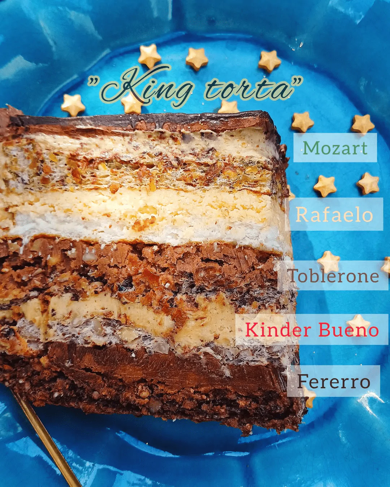

| Mängd | Ingrendiens |
|---|---|
| 20 st | Äggvitor |
| 200 g | Socker |
| 100 g | Mandel |
| 100 g | Hasselnötter |
| 100 g | kokosflingor |
| 400 g | Smör |
| 100 g | Nutella |
| 100 g | Bakchoklad |
Vispa 4 äggvitor med en nypa salt till ett fast skum. Tillsätt 4 msk socker och vispa tills marängen är blank och fast. Vänd sedan ner 100 g hackade rostade hasselnötter och 1 msk kakao
Bred ut smeten på en plåt eller i en form klädd med bakplåtspapper. Grädda i en förvärmd ugn på 180 °C.
Vispa 4 äggvitor med en nypa salt till ett fast skum. Tillsätt 4 msk socker. Vänd ner 100 g hackade rostade hasselnötter och 1 msk majsstärkelse.
Grädda på samma sätt som den första bottnen.
Gör på samma sätt som ovan: vispa 4 äggvitor med en nypa salt och 4 msk socker. Vänd ner 100 g hackade rostade mandlar och 1 msk majsstärkelse.
Grädda på samma sätt som den tidigare bottnarna.
Vispa 4 äggvitor med en nypa salt och 4 msk socker. Vänd ner 80 g kokosflingor och 1 msk majsstärkelse.
Grädda på samma sätt som de övriga bottnarna.
Vispa 20 äggulor med 20 msk socker. Tillaga blandningen över vattenbad under omrörning tills den tjocknar.
Låt krämen svalna helt. Tillsätt därefter 400 g rumsvarmt smör och vispa till en jämn och fluffig kräm.
Dela grundkrämen i 5 lika stora delar.
Blanda en del av grundkrämen med:
Blanda den andra delen med:
Blanda den tredje delen med:
Blanda den fjärde delen med:
Avsluta tårtan med chokladsmörkräm eller ganache efter smak.
Tillbaka